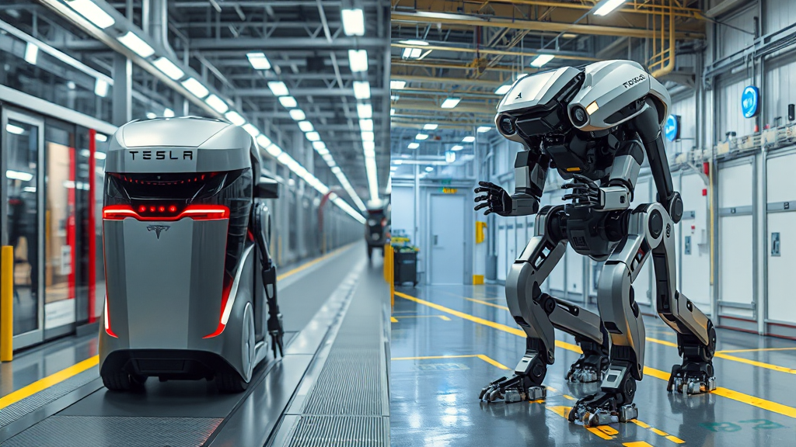

Tesla Optimus vs Atlas: кто ближе к массовому рынку гуманоидов
Введение

Если смотреть только на ролики, кажется, что рынок гуманоидов уже почти зрелый: роботы ходят, поднимают коробки, открывают двери и уверенно двигаются рядом с людьми. Но в промышленности решают не ролики, а три скучных вещи: стабильность смены, стоимость одного цикла операции и безопасность без постоянного ручного контроля. Именно на этом этапе чаще всего ломаются самые громкие обещания.
Сравнение Tesla Optimus и Atlas от Boston Dynamics поэтому важно делать не по “вау-демо”, а по производственной логике. Tesla делает ставку на масштаб и экономику автоконвейера, а Boston Dynamics — на надежность робота как промышленного инструмента, который сначала доказывает ценность на ограниченных задачах, а потом расширяет зону применения. Отсюда и главный вопрос статьи: кто раньше дойдет до массового производства и что вообще в 2026 году можно честно назвать “массовым” в гуманоидной робототехнике.
Основная часть
Почему это важно сейчас
Сейчас в мире совпали сразу три фактора. Во-первых, дефицит линейного персонала на складских и производственных операциях не исчезает, особенно в ночных сменах и на монотонных участках. Во-вторых, стоимость сенсоров, вычислений и батарей по сравнению с 2018–2020 годами снизилась настолько, что эксперимент уже не выглядит экзотикой для крупного бизнеса. В-третьих, генеративный ИИ ускорил разработку систем восприятия и управления, и компании получили шанс быстрее обучать роботов новым действиям.
На этом фоне и Tesla, и Boston Dynamics публично двигают тему от R&D к промышленной эксплуатации. В квартальном отчете Tesla Q4’25 прямо говорится, что Gen 3 — это первый дизайн Optimus, изначально рассчитанный на массовое производство, а старт производственной линии запланирован до конца 2026 года. Boston Dynamics со своей стороны еще в материале Electric Atlas обозначила переход от “лабораторной легенды” к коммерческому электроприводному Atlas, а в январе 2026 в публикации Atlas Launch заявила о производстве продуктовой версии.
Именно поэтому 2026–2028 годы — не “время красивых обещаний”, а окно, когда станет видно, какие подходы переживают контакт с реальной экономикой операций.
Что было до этого
Исторически компании пришли к текущей точке очень разными маршрутами. Atlas родился как исследовательская платформа в эпоху гидравлики и долгие годы ассоциировался с техническими демонстрациями динамики. Ключевой поворот случился в 2024 году: Boston Dynamics вывела электрического Atlas и прямо связала его с коммерциализацией и промышленными сценариями на стороне Hyundai, о чем сказано в официальном блоге.
Optimus, наоборот, сразу стартовал как продуктовая идея внутри крупного промышленного бренда. У Tesla с первого дня была не только робототехника как таковая, но и готовая инфраструктура масштабного производства, поставщиков, внутренних фабрик и сильный стимул быстро довести робота до полезной работы на собственных площадках. В 2024 и 2025 годах заявления о сроках менялись, и по данным Reuters 2024 ранние ожидания по продажам оказались слишком агрессивными, но в Tesla Q4’25 риторика стала более производственно конкретной: Gen 3, подготовка линии, запуск до конца 2026-го.
На какой стадии компании сейчас
Если коротко: обе компании уже не на стадии “чистого эксперимента”, но и до реальной массовости еще далеко.
По Tesla на сегодня есть формальная рамка из собственного документа Tesla Q4’25:
- Gen 3 позиционируется как версия под массовое производство.
- Идет подготовка первой производственной линии и цепочки поставок.
- Старт выпуска обозначен до конца 2026 года.
- Декларируется долгосрочная цель мощности до 1 млн роботов в год.
Одновременно внешние источники напоминают, что фактический разгон будет медленным. В январе 2026 Reuters 2026 передавал комментарии о “agonizingly slow” старте по Cybercab и Optimus. Это важный сигнал: даже при сильной вертикальной интеграции Tesla сама признает, что первые стадии будут ограниченными.
По Atlas картина более “индустриальная” и менее потребительская. Boston Dynamics в январе 2026 заявила о немедленном производстве продуктовой версии в материале Atlas Launch, а у Hyundai и в отраслевой прессе верифицируется поэтапная модель внедрения. В Hyundai Newsroom и в материале Reuters Hyundai фигурирует запуск применения на площадке в Джорджии с 2028 года, начиная с задач вроде parts sequencing и дальнейшей валидации процесс за процессом.
Иными словами, Tesla сейчас сильнее в “амбиций на масштаб”, а Atlas — сильнее в “структуре промышленного внедрения по этапам”.
Где ключевые различия между Optimus и Atlas
Главное отличие — не в скорости шага и не в эффектных видео, а в целевой архитектуре бизнеса.
Optimus строится как потенциально дешевый, тиражируемый “рабочий модуль” под большие объемы. Сильная сторона подхода — производственная ДНК Tesla: компания десятилетиями живет в режиме масштабирования сложных продуктов. Если Gen 3 действительно стабилизирует механику, приводы, руки и автономность в стандартизируемых операциях, у Tesla есть шанс первой выбить себестоимость на уровень, где робот становится массово оправдан для фабрик и логистики.
Atlas у Boston Dynamics выглядит как “премиальный промышленный инструмент”: акцент на маневренность, сложную кинематику, надежность в трудных движениях и контролируемое внедрение у крупных партнеров. Это может замедлить ранний объем, но уменьшает риск репутационного провала, когда робот не выдерживает реальный темп смены.
По сути, Tesla пытается выиграть через кривую стоимости и тираж, а Boston Dynamics — через инженерную зрелость и более дисциплинированный go-to-market.
Массовое производство: будет ли и когда
Короткий ответ: да, будет, но не одномоментно и не в том виде, как это обычно рисуют в инфоповестке.
Для Tesla реалистичный сценарий выглядит так:
- Конец 2026 — запуск первой линии и ограниченный выпуск Gen 3, как указано в Tesla Q4’25.
- 2027 — фаза болезненной стабилизации качества, где важнее процент безошибочных циклов, чем количество произведенных роботов.
- 2028+ — только при подтвержденной надежности и цепочке поставок возможен переход к действительно крупным сериям.
Для Atlas/Hyundai ожидания более консервативные, но и более проверяемые:
- 2026–2027 — доработка и пилоты с фокусом на конкретные безопасные операции.
- 2028 — старт применения в Metaplant и расширение после валидации процессов, о чем пишут Hyundai Newsroom и Reuters Hyundai.
- После 2028 — постепенное масштабирование по мере доказанной окупаемости.
Здесь важно развести термины. “Массовое производство” в презентациях и “массовая экономически оправданная эксплуатация” — это не одно и то же. Первое можно запустить быстро, второе занимает годы.
Примеры задач, где решается судьба массовости
Судьбу и Optimus, и Atlas определят не универсальные обещания, а рутинные задачи:
- внутрискладская подача и перенос контейнеров;
- parts sequencing на автопроизводстве;
- загрузка/разгрузка повторяющихся легких и средних компонентов;
- перемещение между постами в узких проходах;
- ночные смены на монотонных операциях с нехваткой людей.
Эти задачи не самые “героические”, зато именно на них проще посчитать ROI: сколько заменено ручных перемещений, какой процент отказов, сколько простоев, как изменились безопасность и текучка.
Сценарий до/после
До: участок на производстве зависит от людей на однообразной операции. Проблемы стандартные: часть смен закрывается с переработками, на пиковых неделях растет брак из-за усталости, а обучение новых сотрудников занимает недели. Руководство боится автоматизировать “в лоб”, потому что классические манипуляторы плохо переносят вариативность среды.
После (пилот с гуманоидом): робот берет стабильный блок действий, например перенос и подачу деталей в фиксированные зоны. Люди остаются на контрольных и более гибких задачах. В первые месяцы производительность не взлетает, зато снижается хаос в сменах и появляется предсказуемость. Если уровень отказов падает и робот выдерживает темп, масштабирование на соседние участки становится техническим, а не политическим вопросом.
Именно этот “скучный” путь и будет главным маркером зрелости рынка в 2026–2028.
Конкурентный фон
Дуэль Tesla и Boston Dynamics важна, но рынок уже многополярный.
- Figure активно тестирует гуманоидов в производственном контуре BMW: у компании есть материал Figure BMW, а у автопроизводителя — подтверждения в BMW Press.
- Agility Robotics (Digit) расширяет сотрудничество с Amazon и пилоты в логистике: Agility Amazon.
- Apptronik (Apollo) уже в коммерческом пилоте с Mercedes-Benz: Apptronik Mercedes.
- 1X двигает гибридную траекторию “дом + индустрия” с заявками на крупные пилоты через партнерства: Business Wire 1X.
Это означает, что “победитель забирает все” маловероятен. Скорее рынок разделится по вертикалям: тяжелая промышленность, логистика, сервис, домашние сценарии.
Кому подходит / кому нет
Гуманоиды уже подходят крупным компаниям, у которых есть:
- повторяемые операции с понятной метрикой эффективности;
- культура пилотов и терпение к 12–24 месяцам внедрения;
- инженерная команда, способная поддерживать гибрид “люди + роботы”.
Плохо подходят тем, кто ожидает мгновенной замены людей “из коробки” и не готов к фазе адаптации процессов. В этой зоне риск завышенных ожиданий максимальный: робот может быть технологически сильным, но экономически невыгодным на конкретном участке.
Авторская позиция и прогноз на 6–12 месяцев
Мой рабочий прогноз такой. В ближайшие 6–12 месяцев мы не увидим “настоящей массовости” ни у Optimus, ни у Atlas в том смысле, в каком массовость понимается в автомобильной индустрии. Мы увидим другое: переход от единичных шоу-кейсов к плотной серии производственных пилотов, где победят не самые зрелищные роботы, а самые предсказуемые.
У Tesla преимущество в потенциале масштаба и стоимости при успехе Gen 3. Но у нее же и главный риск: если ранняя эксплуатация покажет нестабильность на базовых операциях, производственный разгон станет намного медленнее, чем заложено в публичных целях.
У Atlas преимущество в инженерной дисциплине и более “промышленном” темпе внедрения. Главный риск другой: более аккуратная стратегия может ограничить скорость выхода на большой объем и уступить инициативу игроку, который первым решит экономику единицы в крупных сериях.
Именно поэтому ответ на вопрос “кто победит” сегодня преждевременный. Корректнее спрашивать: кто быстрее докажет устойчивый цикл “безопасность → надежность → себестоимость” на реальных фабричных задачах. По моему мнению, в 2026 году впереди по вероятности контролируемого внедрения выглядит Atlas/Hyundai-подход, а по потенциальному масштабу при успешной стабилизации — Tesla.
Итог
- Optimus и Atlas вышли из стадии чистого R&D, но до полноценной массовой эксплуатации рынок еще не дошел.
- Tesla публично целится в старт производственной линии до конца 2026 года, однако сама признает, что ранний разгон будет медленным.
- Atlas движется более поэтапно: продуктовая версия, пилоты, затем промышленное внедрение у Hyundai с горизонтом 2028+.
- Массовость в гуманоидной робототехнике в ближайшие годы будет определяться не демо, а экономикой повторяющихся операций.
- На горизонте 6–12 месяцев ключевой KPI для обеих компаний — стабильная работа в реальной смене, а не число громких анонсов.